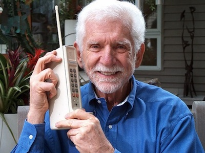

En 1947, AT&T ideó un novedoso sistema, basado en muchos transmisores pequeños y formar con ellos una red, en lugar de un potente transmisor ubicado en una altura. Para la consecución de este objetivo la AT&T solicitó a la Comisión Federal de Comunicaciones (FCC), un permiso para desarrollar el sistema de telefonía móvil, esta solicitud fue denegada.
En 1973 la FCC, estaba a punto de otorgarle a AT&T el monopolio del sistema celular. Motorola ve que ella puede entrar en este mercado, ya que conocía el negocio de las comunicaciones personales y convoca a sus trabajadores a un concurso para que en seis semanas presenten un prototipo de teléfono portátil. El 3 de abril de 1973, Marty Cooper vicepresidente de Investigación y Desarrollo de Motorola en ese entonces, hace una llamada telefónica a Joel Engel, ingeniero jefe de AT&T y propulsor de la telefonía celular, utilizando el prototipo desarrollado por su compañía, certificándose de esta manera el nacimiento del teléfono celular.
El primer prototipo de teléfono móvil comercializado a gran escala fue el diseñado por el ingeniero Rudy Krolopp, de la compañía Motorola, en 1983. Este teléfono pesaba 0,74 kg, y tenía un valor de 4000 dólares.
En marzo del 1981 el presidente de Motorola comienza hacer gestiones con las más altas esferas del Gobierno de los Estados Unidos, hasta presentarle el prototipo a Ronald Reagan entonces presidente del país, este ve las ventajas del sistema y presiona a la FCC para autorización del servicio. Luego de dos meses de esta entrevista, terminan 8 años de burocracia, dando la Comisión Federal de Comunicaciones luz verde al proyecto. Quedando AT&T con el servicio y Motorola con los equipos.
Desde entonces la constante investigación en este campo ha propiciado el desarrollo de baterías más pequeñas y de mayor duración, pantallas más nítidas y de colores, la incorporación de software más amigable y multiplicidad de formatos de teléfonos y de funciones agregadas a este, lo cual ha hecho que muchos crean que se trata del dispositivo del siglo XXI.